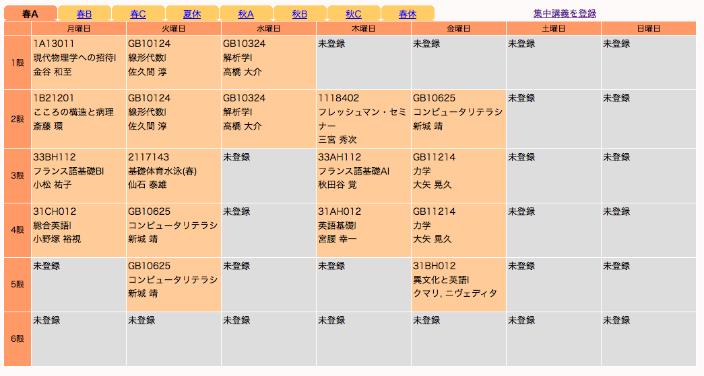

*私の履修計画まとめ
新入生は単位取得の夢を見るのか
| 必修科目 |
体育 |
自由単位 |
| 総合科目Ⅰ |
夏 |
フランス語 |
| 総合科目Ⅱ |
冬 |
相対性理論 |

©TWINS/Tsukuba Division of Educational Promotion
このページの目的
- 記憶が新しいうちに、自分の履修計画をまとめ後輩の参考とする
- 私の履修計画にまずいところがなかったか見直す
- 後で思い起こしたときに、面倒な計画を立てたもんだと後悔するため
- ウェブ作成の一端とするため
参照すべきサイト
https://twins.tsukuba.ac.jp/
https://kdb.tsukuba.ac.jp/
http://www.stb.tsukuba.ac.jp/~zdk/bridge/
ページ作者連絡先
事の重大さを考慮して、次の順に連絡してください
- ツイッター @sho_void
- メール（職務用）s1411385(at)coins.tsukuba.ac.jp
- メール（個人用）takasyou.kuri(at)gmail.com
- 高木 尚（たかき しょう）
ページトップに戻る